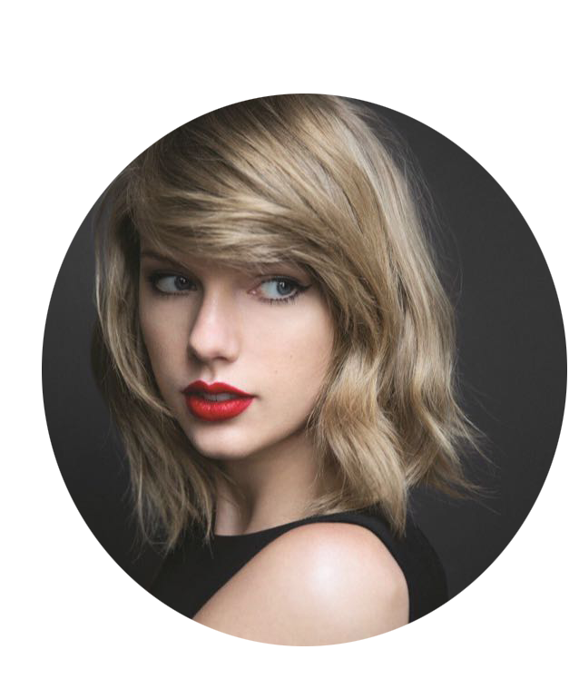

About me

我是潘雪涛，欢迎走进我的世界！
我的网站
个人简介
学习情况
相册
喜爱的音乐
留言
pan xue tao's website
桂林医学院 信息管理与信息系统
你可以在这些社交网络上关注我
微博
微信
QQ
邮箱
Designed and developed by Pan xue tao.
Copyright © 2010-2018 panxuetao.com. All Rights Reserved
 微信
微信
 QQ
邮箱
Designed and developed by Pan xue tao.
Copyright © 2010-2018 panxuetao.com. All Rights Reserved
QQ
邮箱
Designed and developed by Pan xue tao.
Copyright © 2010-2018 panxuetao.com. All Rights Reserved